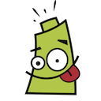

Pilas Engine - це ігровий рушій, який дозволяє створювати ігри та вчитися програмувати. Він розроблений іспаномовними розробниками та має підтримку викладачів і спеціалістів, що спеціалізуються на розробці програмного забезпечення.
Додатково